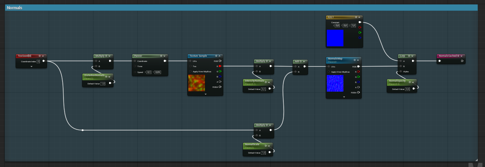
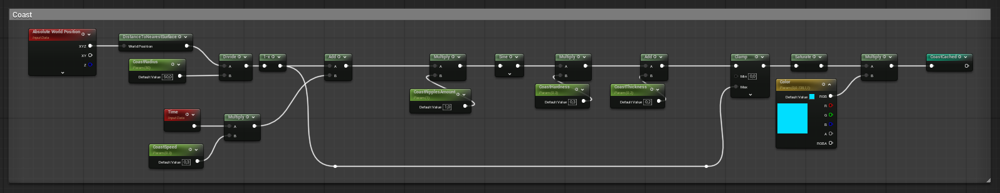
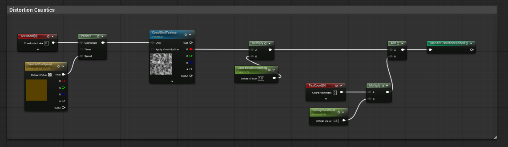
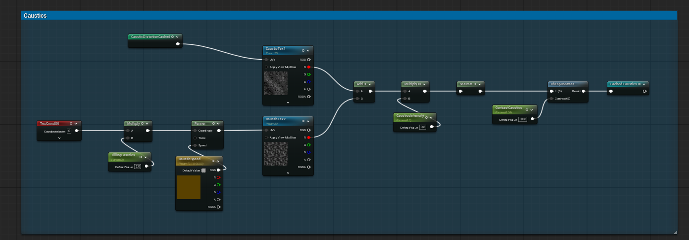
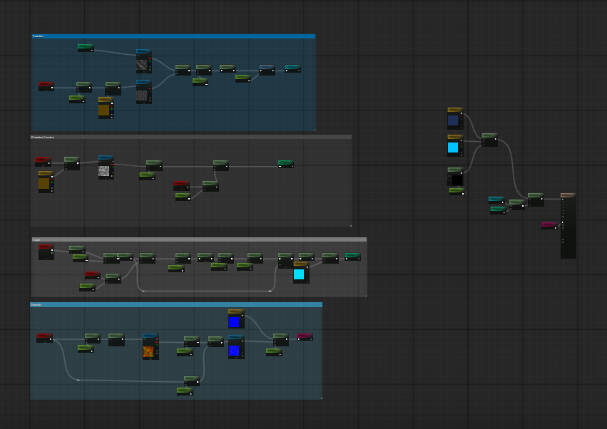
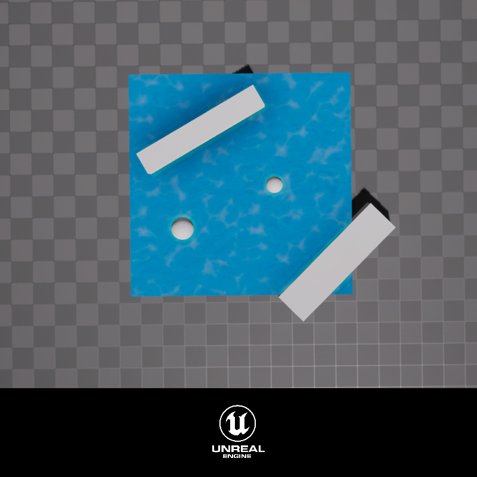

Water Shader
Water shader in Unreal
Overview
I decided to create a stylized water shader that could easily adapt to different projects. My goal was to build a flexible material with multiple customizable features that artists can change depending on their needs.
Techincal Features
The shader includes animated caustics, caustic distortion, customizable normal maps, and ripples that are driven by the Distance to Nearest Surface node, allowing the water to react to nearby geometry. I also exposed parameters for colors, opacity, textures, distortion intensity, wave speed, and other material properties so the look can be quickly adjusted through an instance.




Another important aspect was developing a clean and scalable tool. I aimed for it to support a wide range of effects and remain open to future behaviour additions. I focused on designing it to be understandable by artists and programmers alike, allowing other collaborators to work on it. I divided the graph into sections, made use of reroute nodes, and exposed only relevant variables.

Learnings
This project was a great opportunity to continue learning more about customizable materials and shaders. My focus was not only on achieving a visually impressive result, but also on building a modular, reusable, and easy-to-use tool.
I was able to learn more about how to blend different challenges while using multiple types of distortion. I also learned other ways to implement the Distance To Surface node. Even though I had some experience, I had used it to displace vertex according to the distance to the floor, being able to experiment with how to use it in the context of detecting nearby geometry to generate ripples was an interesting change. I can now apply this knowledge to more effects and achieve more impressive, complex results.
